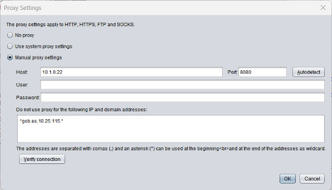

Proxy settings
Autofirma must access the Internet for various reasons and, if necessary, a network proxy must be set up to allow it. The purposes for which Autofirma may require access to the network are:
- Communicate with the web pages in which signing procedures are carried out.
- Search for updates (only if the option is enabled).
- Send statistics (Only if the option is enabled).
All network connections made by Autofirma will apply the proxy settings here set.

Proxy settings are:
- No proxy: Network connections shall be made directly.
- System Proxy Settings: The application will identify the settings to be applied for each URL according to the configuration set in the OS and/or browser. This setting may not be exactly the same as that set out in Windows.
- Manual proxy settings: It allows you to set the specific proxy settings to be used. Configurable options are:
- Host: Domain name or proxy IP.
- Port: Number of port access to the proxy.
- User: User name to be used when proxy requires authentication. Optional.
- Password: User password to use when proxy requires authentication. Optional.
- Do not use proxy for the following IP addresses and domain addresses: A list of IP addresses and domain names to be accessed directly (without passing through the manually configured proxy). Commonly, the addresses of the intranet working on when signing operations are carried out from web applications located both inside and outside your intranet will be configured here.
Addresses shall be written separated by commas (,) and asterisks (*) may be written at the beginning or end of each as wildcard to identify full subdomains or subnets. Optional.
Additionally, the following options are provided:
- Autodetect: Remove the host and port to be used for a generic address from the system settings.
- Verify connection: Check the manual proxy settings for access to a generic address.
The set settings will apply when you press the OK button. If the Cancel button is pressed, the window will be closed without applying the settings.